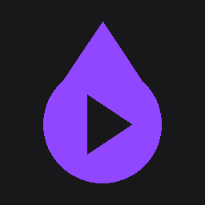

Six keys that show what your Twitchpoint server reports: the channel it's watching, the drop it's working on, what comes next and when the campaign will be done. Here the server is pretend; change what it reports on the left and watch the keys on their next refresh.
Made-up channel, game and drops. Nothing here connects to anything.
The keys are drawn and refreshed by the plugin's own code. The server it asks is a stand-in on this page that answers the same requests a real Twitchpoint server would, including the older endpoints and connection errors.
It only reads what your Twitchpoint server reports over your local network. It doesn't log in to anything or watch anything itself. Set the server's address once in any key's settings.
Builds without /api/streamdeck still work through the older endpoints, but Next drop shows n/a and the ETA covers only the current drop. Try Older build on the left.